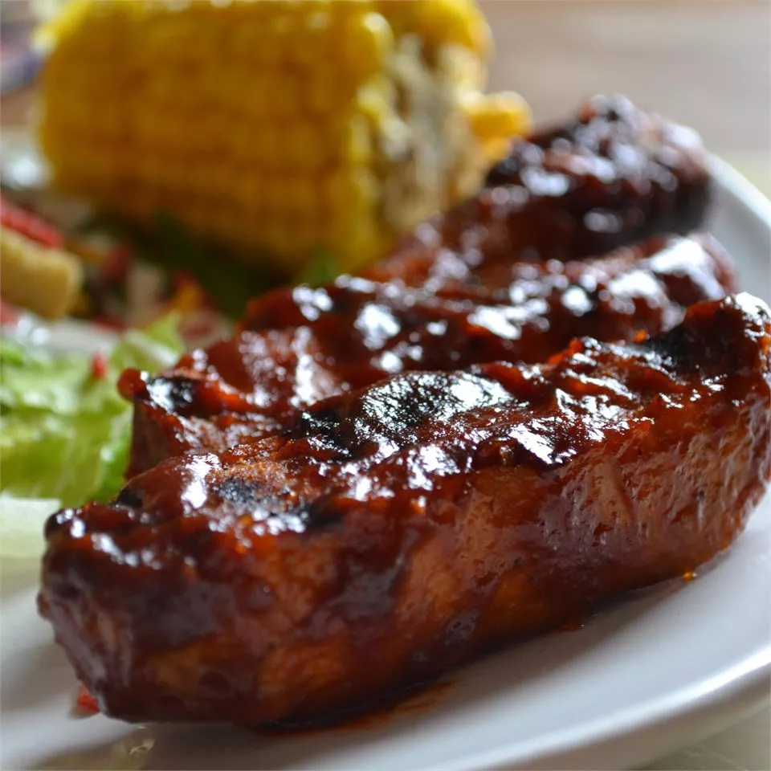

Simple BBQ Ribs

Description
This BBQ ribs recipe may be different than others you've tried,
but for super tender ribs, give it a try!
Make the perfect ribs without the grill using this tasty BBQ ribs recipe.
All you need is five simple ingredients and your oven for these tender,
flavorful ribs that your whole family will love.
After one bite, you'll never want to use another BBQ rib recipe ever again.
Ingredients
- 2.5 pounds country-style pork ribs
- 2 tablespoons kosher salt
- 1 tablespoon garlic powder
- 1 teaspoon ground black pepper
- 1 cup barbeque sauce
Steps
- Gather all ingredients
- Place ribs in a large pot and cover with water. Stir in kosher salt, garlic powder,
and pepper, and bring water to a boil over medium heat. Continue to boil until
ribs are tender, 40 to 45 minutes.
- While ribs are boiling, preheat the oven to 325 degrees F (165 degrees C).
- Remove ribs from the pot, and place them in a 9x13-inch backing dish. Pour barbeque
sauce over ribs. Cover the baking dish with aluminium foil.
- Bake in the preheated oven until the internal temperature of the pork has reached
160 degrees F (70 degrees C), 1 to 1.5 hours.
- Serve hot and enjoy!
Back to main page